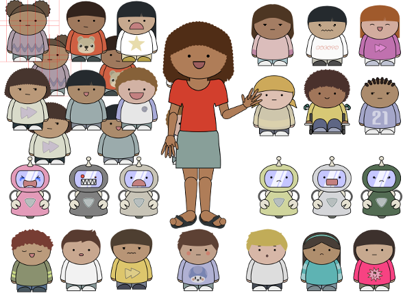

ブレイディによる、探偵 の 条件
ブレイディ: 「 最初 に、良い 探偵 が 身 につけておくべきことを 述 べます。」
** 良い探偵の 条件 **
イ. 不屈 の 勇気 と、じょうぶなからだ。
ロ. 正直であること。
ハ. 十分な 教育 。
ニ. 言語能力 。 辞書 にあるような 言葉 の 意味 だけでなく、言葉がどう 使 われているかについて、広く 深 く 理解 すること。
ホ. 人間を知ること(これは 経験 をつんで 身 につけるしかない)。
へ. しんぼうづよさ。
ト. 愛想 良さ。
チ. 証拠 を使って 注意深 く考えることができること。見かけにだまされないこと。
リ. 慎重 さ。
ヌ. 気分 にふりまわされないこと。
ル. そして、 常識 を 身 につけること。
全部 を 完 ぺきに 身 につけている人はいないのですが、少なくとも、いつも心がけて 努力 をおしまないことが 大切 です。このなかの一つでも大きくかけている 場合 は、 自分自身 だけでなく 他 の人にも 危険 がおよぶかもしれないということを、よく 理解 してください。
それから、自分が正しい 側 についていると思えないような 仕事 は、ぜったいに引きうけないこと。といっても、何が正しいのかは、人間を知ることと同じで、なかなか分かりません。 最初 にどう 思 ったとしても、くりかえし 確 かめるようにしてください。
以上 のほか、変装術 はとても大事なのですが、あえて書きません。まだ 勉強 するには早いので。
実例 : 帽子 でつかまる
ほんの小さなことが、手がかりとなることが良くあります。 悪党 が 抜 け目なく 警戒 しているそのことが、かえって 彼 らの 弱点 となるのです。
私は年をかさねるにつれて、 探偵 の 成功 にはある 種 の 偶然 がかかわっていると信じるようになりました。それを神のおぼしめしとか、 運 とか、いう人がいます。が、ほんとうはなんなのか、私にも分かりません。
できるかぎり 慎重 に 計画 を立てても、そのとおりに 実行 できたことはめったにありません。計画を立てることがむだだと言うのではありませんよ。しかし、自分の計画をどこまでも守ろうとして、そのときの 状況 に合わせて考えを変えることができない 探偵 は、けっして 成功 することはできません。
ちょっとしたことや、ふとした思いつきが、すばらしい 結果 に 導 くことがよくあります。そんな話を私の 弟子 のデイブ・ドイルに 語 ってもらいましょう。
デイブ・ドイルの最初(さいしょ)の事件を読む。 （ただし、このお話はこどもには 少 しこわいかもしれないので、こわがりの人はつぎに 進 んでください。）
異星 の 探偵術 
ここまでが、ブレイディ 探偵 の話です。ここからは、ホームズのことにもどります。
1993年のことです。オリバー・サックスという 脳 のお 医者 さんで、本も書く人が、テンプル・グランディンという女性 動物学者 に会いに、アメリカのコロラド 州 の 大学 に行きました。
グランディン 博士 は 自閉症 という 障害 を持って生まれたのに、一流 の 動物学者 になった人です。
自閉症 というのは、生まれつき人とうまくまじわることができないという 障害 です。多くのばあい、 言葉 がおくれたり、学校で学ぶことが 難 しかったりするのです。でも、何かひとつのことに 興味 を持つと、すごい 集中力 をしめします。そうして、ほかの人にはまねできないような、すぐれた 能力 を見せることがあります。
サックスはグランディンといろいろなことを話しあいました。その 経験 を「 火星 の 人類学者 」 [Sachs93] という 記事 にまとめ、ニューヨーカーという 雑誌 におくりました。 雑誌社 は 記事 が 正確 かどうか、グランディンに 原稿 をおくって、たしかめてもらいました [Wired15] 。
グランディンは 記事 の 内容 にまちがいはありませんと 雑誌社 につたえました。ただ、二ヶ所だけはすこしちがっていました。グランディンはサックスを自分の家にまねいていました。自分が 発明 した 特別 なマッサージ 器 を見せたりしたのでした。
このマッサージ器は 自閉症 の人のためのものです。自閉症の人は、 不安 になったときに、からだをしめつけてもらうと 落着 くことがあるようです。それでいて、人にだきしめられると 怖 くなるのです。だから、 彼女 は、そんなときのために、 体 をちょうどよい 具合 にしめつけてくれる 器械 を 発明 したのでした。
サックスは、グランディンの家の 特徴 や、マッサージ 器 の形や 動作 について、 正確 に書くことができませんでした。でも、グランディンは、サックスと自分とは、ものごとを考える 頭 のしくみがちがうのだから、しかたがないと考えました。だから、サックスのまちがいを、せめることはしませんでした。
「私は 目に見えるもので考える 。でも、サックスさんは 言葉 で考える。」と、グランディンは言いました。
サックスはとても頭のいい人なのですが、彼がものを考える、やり方は 普通 の人とちがっていません。私たちは、何かをちゃんと考えようとするときは、 言葉 をつかって考えているものなのです。
しかし、世の中には、グランディンのように、 言葉 をとおしてではなく、 直 かに目にうつるものそのもので考える人がいるのです。そんなやりかたで 深 く 物事 を考えることができるのだということは、グランディンのような人が世の中に出てくるまで、ほとんど知られていませんでした。
とはいえ、グランディンのような人が、どんなふうに 物事 を見たり、 感 じたり、考えているのかは、私たちにはなかなか 理解 できません。でも、グランディンのような人からすれば、私たちがどんなふうに 物事 を見たり、 感 じたり、考えているのか、やはり、なかなか分かることができないのです。
グランディンは、 一生懸命 に 他 の人のことを分かるための 努力 をして、他 の人たちといっしょに生きていかなければなりません。 彼女 にしてみれば、私たちはまるで 異星人 (他の 星 の人)のような、グランディン 自身 とはずいぶん 違 う 知的生物 なのです。
彼女は人間とより、牛や 豚 とのほうが 気持 ちがつうじると 感 じるようです。 動物 もグランディンも、なまな 感覚 (目で見た形や動き、耳にはいってきた音、 鼻 でかいたにおい)をつかって考えるというところが、おたがいに近いと 感 じられるのかもしれません。
ところで、世の中には、 自閉症 ではないのに、 自閉症 の人のように 物事 を見たり、 感 じたり、考えたりできるように 訓練 をつんだ人たちがいます。 有名 な 哲学者 のヴィトゲンシュタインという人や、 名探偵 シャーロック・ホームズなどは、そういう人たちの 代表 です。
言葉 だけで考えていると 人間 はいろいろな 思 いこみから、まちがったり、まよったりします。ヴィトゲンシュタインのような 哲学者 は、 人々 がふだんしているのとは 違 った考え方があることを、 教 えてくれました。そうやって、 人々 の思いこみを 治 そうとしたのです。
探偵 も、はじめに 何 かをこうだと思いこんでしまうと、ちゃんとものが見えなくなってしまうことがあります。また、 言葉 だけで分かったつもりでいると、 物 や人のこまかいところを 見逃 してしまいます。
ホームズは、ほかの人がとても気づかないようなことに、気づくことができます。また、いろいろなことを、その 元 のかたちのまま、 頭 のなかに、 整理 して入れておくことができます。そして、 必要 なときにはすぐに頭のなかから取り出すのです。 自閉症 の人とおなじようなやり方で、 人間 や物を見る、 特別 な 訓練 をしたからだと思いますよ。
2021年6月19日
{kind=link}
{kind=link}